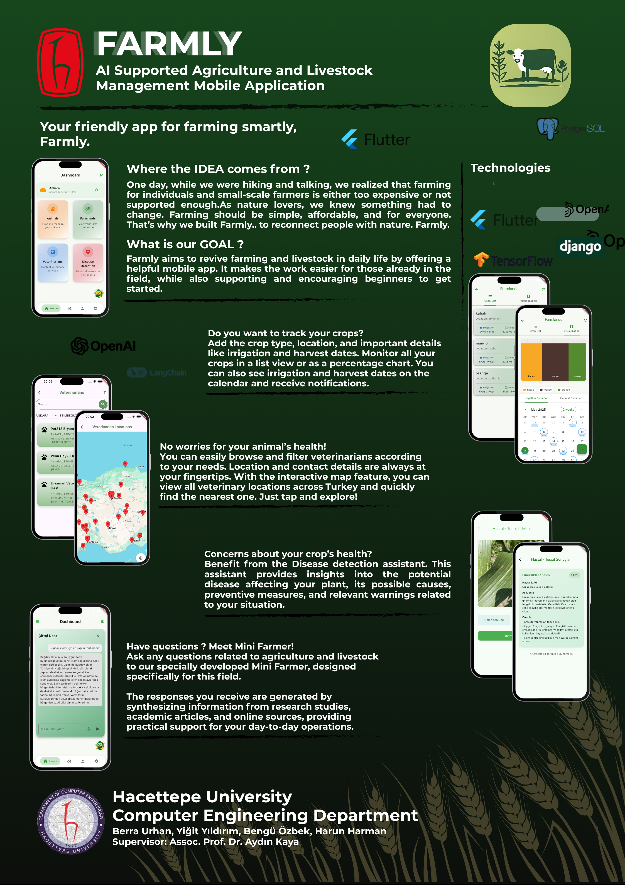
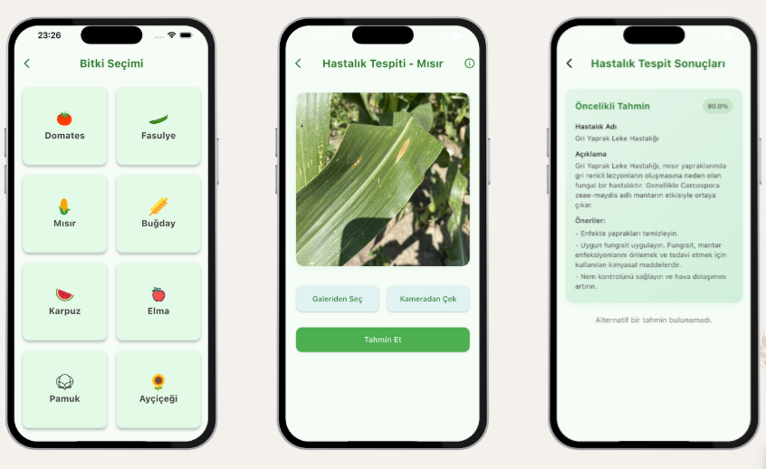

FARMLY: AI Powered Agriculture and Livestock Management Mobile App
- Farmly is a user-friendly farmer app for anyone interested in farming. The app includes features such as field management, livestock inventory, crop disease detection, chatbot assistant, and veterinarian services. We aimed to provide an all-in-one place for farmers to manage these services.
- In this project, I was responsible for data collection, developing crop disease detection models, and building the RAG system & chatbot.
-
Frameworks & tools used:
- TensorFlow
- OpenAI API
- LangChain
- We obtained accuracy values between 85% and 95% for the crop disease detection models.